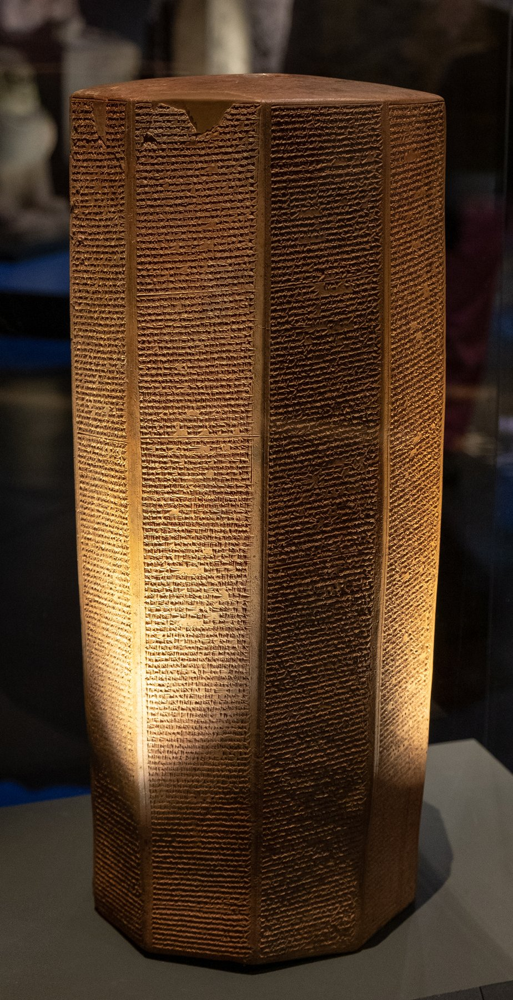

Rassam Cylinder of Ashurbanipal

- Find Name
- Rassam Cylinder of Ashurbanipal
- Description
- A ten-sided clay prism, dated to 643 BCE, inscribed with the most complete annals of the Neo-Assyrian king Ashurbanipal (reigned 668–627 BC). It was found in the North Palace of Nineveh (Kouyunjik) by Hormuzd Rassam in 1854 and is held in the British Museum (BM 91026). Its 1,301 lines cover the king's accession, his military campaigns — including the Egyptian wars, the conquest of Tyre, wars with Elam and Babylon, and the Arabian expedition — and the repair of Sennacherib's palace at Nineveh.
- Historical Period
- Iron Age II
- Evidence Class
- Direct
- Interpretations
- The cylinder is the fullest Assyrian account of the reign that followed Esarhaddon and overlapped the later years of Manasseh of Judah. The 22-king alliance list associated with the Egyptian campaigns — including Manasseh of Judah contributing troops or gifts — is preserved in the parallel Prism C tradition and associated jointly with Prisms A and C; it should not be quoted as a verbatim line of Prism A itself. Caution: distinguish Prism A (Rassam, BM 91026) from Prism C (BM 93007, found by Layard in 1879); both are in the British Museum and their campaign lists overlap.
- Alternative Names
- Prism A of Ashurbanipal; Rassam Prism
- Related Places
- Related Books
- Related People
- Scripture Illuminated
- Biblical Significance
- The cylinder documents the Assyrian empire at its height during Manasseh's later reign, and its Egyptian-campaign king lists place Judah's king among Assyria's western vassals — the political world behind 2 Chronicles 33, Ezra 4:10 (Osnappar) and Nahum's oracle against Thebes (No-Amon), the Egyptian capital Ashurbanipal sacked.
- Artifact Date
- 643 BCE
- Current Location
- British Museum, London (BM 91026)
- Date Discovered
- 1854
- Discovery Location
- Nineveh (North Palace, Kouyunjik), Iraq
- Timeline Era
- Divided Monarchy
Awaiting Review Not yet checked against scholarly sources. Treat its claims as provisional until this entry is reviewed. About verification
Sources: https://en.wikipedia.org/wiki/Rassam_cylinder
https://www.bible.ca/manuscripts/bible-archeology-Rassam-Prism-A-C-Ashurbanipal-King-Assyria-Manasseh-Judah-Alliance-Taharqa-Tirhakah-Necho-II-Tanutamon-Psammetichus-I-Pharaoh-Egypt-667BC.htm
https://www.bible.ca/manuscripts/bible-archeology-Rassam-Prism-A-C-Ashurbanipal-King-Assyria-Manasseh-Judah-Alliance-Taharqa-Tirhakah-Necho-II-Tanutamon-Psammetichus-I-Pharaoh-Egypt-667BC.htm
Last reviewed: not yet reviewed